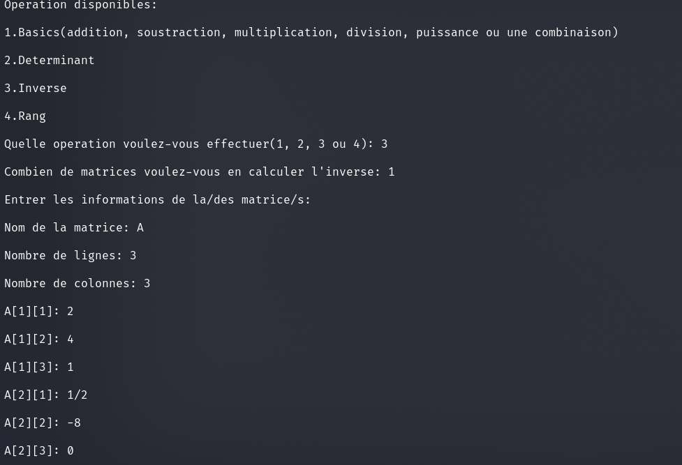
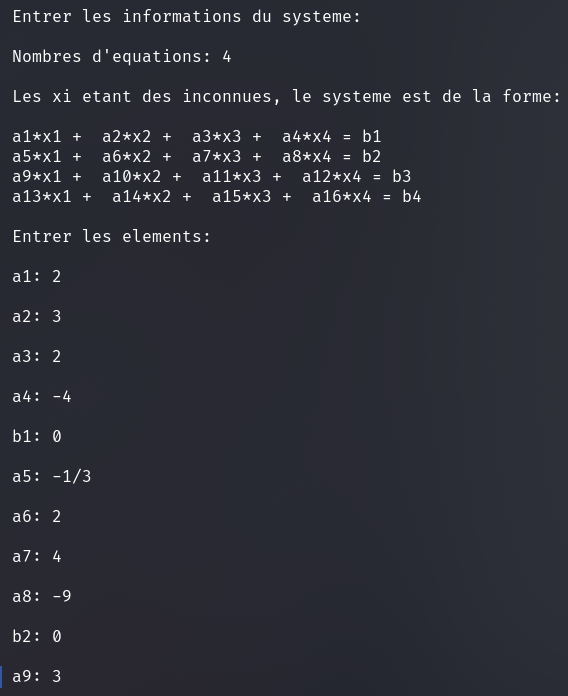
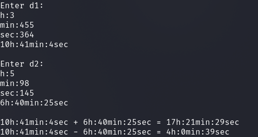

Il s'agit du premier langage de programmation que j'ai appris et que je maitrise le mieux.
Je developpe essentiellement en console avec ce langage mais je peux egalement concevoir
des interfaces graphiques avec Qt
Voici la liste de mes projets les plus interressants:
Il s'agit d'un code effectuant tous les calculs concernant les matrices; ils vont des operations basiques comme l'addition, la soustraction, la multiplications et la division aux calculs complexes comme le determinant, l'inverse ou encore le rang. Dans l'insertion, on peut egalement y mettre des fractions sans problemes; de plus, ce code fonctionne pour les matices de tout type mxn (qu'il s'agisse de 10x10, 4x50, 3x5,...).
Il s'agit d'un code permettant de resoudre des systemes d'ordre n. Les calculs se basent sur le code de la matrice pour trouver la matrice solution.
Il s'agit d'un code tres basique dont la fonction parle d'elle-meme. On peut s'en servir pour entrer l'heure et effctuer des operations d'addition et de soustraction avec conversion.
